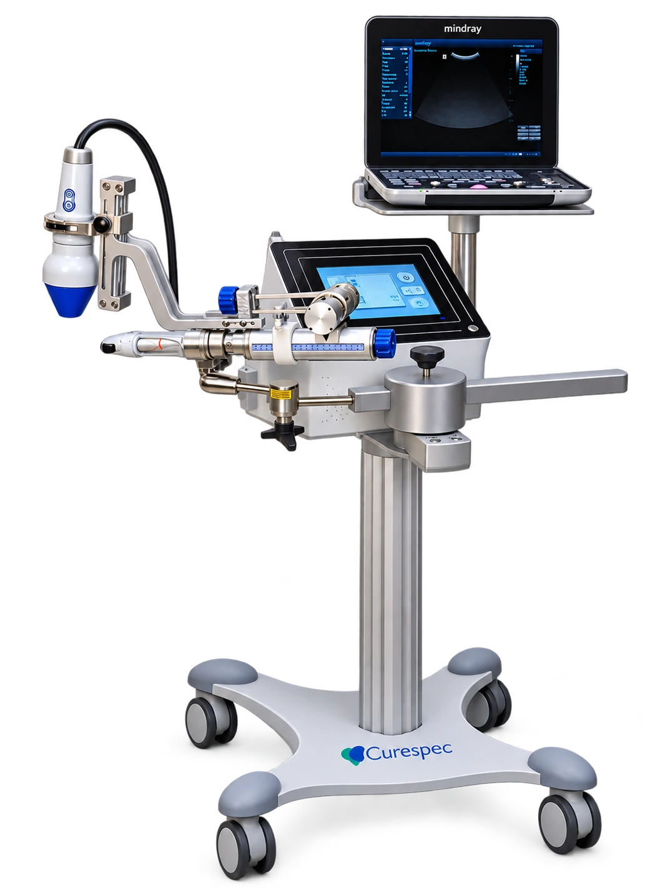
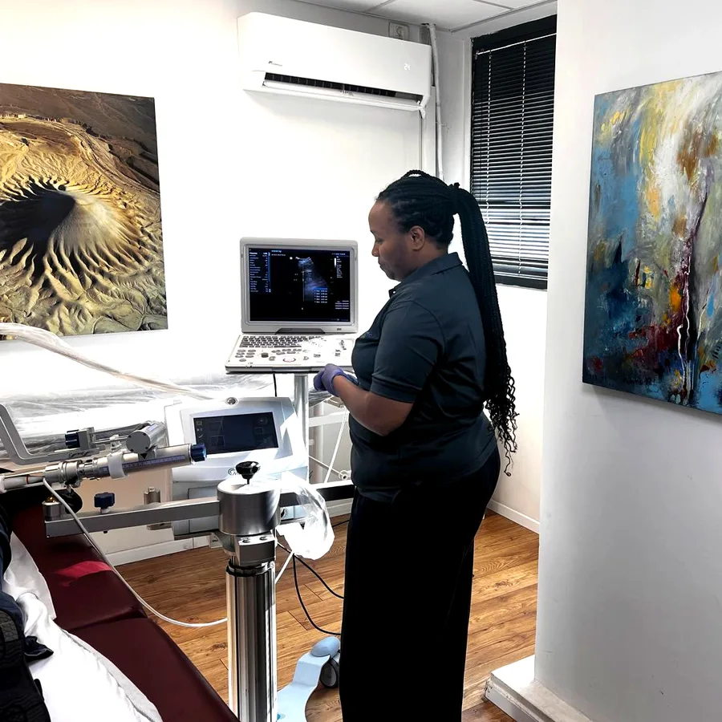

Nephrospec™ Treatment in Israel
Curespec's private clinic in Yehud offers Nephrospec™ treatment for patients with high blood pressure and kidney conditions, under the medical direction of Prof. Gil Chernin and the supervision of Dr. Eitan Tobi, a specialist in shockwave therapy.
What is Nephrospec™?
Nephrospec™ is Curespec's non-invasive, kidney-targeted therapy. It is delivered without surgery, anesthesia or hospitalization, and is designed to support blood pressure management in patients with hypertension and chronic kidney disease, alongside their existing medical care. Learn more about how it works →


Prof. Gil Chernin
Prof. Chernin is a specialist in nephrology (kidney disease) and hypertension, and Director of the Institute of Nephrology and Hypertension at Kaplan Medical Center. He provides medical direction for Curespec's private Nephrospec™ clinic in Israel.
Treatment is carried out under the supervision of Dr. Eitan Tobi, who has specialized in shockwave therapy for over 20 years.
From first contact to treatment
Initial consultation
A short conversation to understand your condition and answer your questions.
Suitability assessment
A clinical evaluation with Dr. Tobi determines whether treatment is right for you.
Treatment series & follow-up
A series of 6 sessions over 3 weeks, about 60 minutes each, with medical follow-up throughout.
Treatment in Yehud
Treatment takes place at Curespec's private clinic in Yehud-Monosson, under Prof. Chernin's medical direction and Dr. Tobi's supervision. If you suffer from high blood pressure and chronic kidney disease, this innovative, non-invasive therapy may be a viable option for you. Every inquiry is personally reviewed by our team before treatment begins.

Think Nephrospec™ may be right for you?
Fill out a short form to check your eligibility for treatment in Israel.